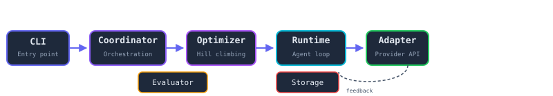

Automatic Discovery of Model-Specific Agent Harness Profiles
An experimental framework testing the hypothesis that harness compatibility matters more than raw model capability.
Features
What HarnessFit provides for agent harness research.
Deterministic Benchmark
Hidden acceptance tests ensure fair, reproducible evaluation across models.
Provider-Neutral Runtime
Unified adapter interface for OpenAI, Anthropic, and Google Gemini — swap without changing agent code.
Parameterized Harness
37 tunable harness parameters — prompt style, tool descriptions, validation policy, retry strategy.
Hill-Climbing Optimizer
Per-model coordinate ascent finds optimal harness profiles with statistical acceptance.
Content-Addressable
Every config, task, and result hashed for deterministic reproducibility.
Event Log Architecture
Typed event log as system of record — every runtime action captured for analysis.
Architecture
Provider-agnostic pipeline from experiment definition to results.

By the Numbers
Current project state.
Quickstart
Get started in under a minute.
# Clone and install git clone https://github.com/rmax-ai/harness-fit.git cd harness-fit # Install dependencies (requires Bun) bun install # Run tests bun test packages/ apps/ benchmarks/repositories/ # Type check bun run typecheck
API Keys
Set OPENAI_API_KEY, ANTHROPIC_API_KEY,
and GOOGLE_API_KEY in your environment.
Copy .env.example to get started.